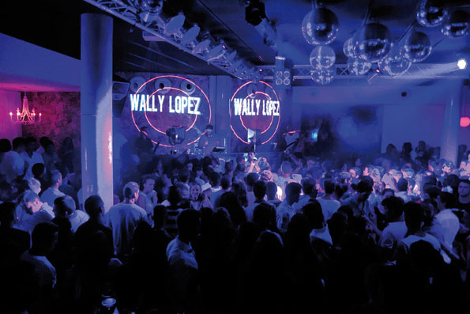

Menorca, única també de nit
Menorca llueix esplèndida de dia, però també ho fa de nit. Quan el Sol se submer-geix sota el mantell de la Mediterrània, una altra illa desperta. Menorca té marxa, això és innegable, però oblidi les grans discoteques; també en aquest aspecte, aquest trosset de terra ha apostat per un altre tipus d'oci en el qual l'equilibri és el factor diferencial.
 Si després de sopar li ve de gust sortir i descobrir què li ofereix l'Illa, li recomanem que visiti els ports de Ciutadella o Maó. Sens dubte, aquests són els dos punts prin-cipals d'oci nocturn, on podrà trobar locals diversos, des d'ambients chill out fins a bars musicals de tot tipus.
Si després de sopar li ve de gust sortir i descobrir què li ofereix l'Illa, li recomanem que visiti els ports de Ciutadella o Maó. Sens dubte, aquests són els dos punts prin-cipals d'oci nocturn, on podrà trobar locals diversos, des d'ambients chill out fins a bars musicals de tot tipus.
 Tot i així, si el que li interessa és viure una experiència diferent, no pot marxar de l'Illa sense visitar la Cova d'en Xoroi, indret únic ubicat en la urbanització de Cala'n Porter, a Alaior, on la llegenda situa la tràgica història d'amor entre el misteriós Xoroi i una noia menorquina. Aquesta gruta oberta al mar, amb indescriptibles vistes sobre un penya-segat, acull la discoteca més personal de Menorca. Un espai on gaudir d'un aperitiu durant el dia, deixar-se endur per la música chill out en caure la tarda i observar unes espectaculars postes de sol o ballar al ritme de la música de prestigiosos disc jockeys quan la Lluna ja ha pres el relleu al Sol. Com veu, Menorca és única i irrepetible també de nit.
Tot i així, si el que li interessa és viure una experiència diferent, no pot marxar de l'Illa sense visitar la Cova d'en Xoroi, indret únic ubicat en la urbanització de Cala'n Porter, a Alaior, on la llegenda situa la tràgica història d'amor entre el misteriós Xoroi i una noia menorquina. Aquesta gruta oberta al mar, amb indescriptibles vistes sobre un penya-segat, acull la discoteca més personal de Menorca. Un espai on gaudir d'un aperitiu durant el dia, deixar-se endur per la música chill out en caure la tarda i observar unes espectaculars postes de sol o ballar al ritme de la música de prestigiosos disc jockeys quan la Lluna ja ha pres el relleu al Sol. Com veu, Menorca és única i irrepetible també de nit.